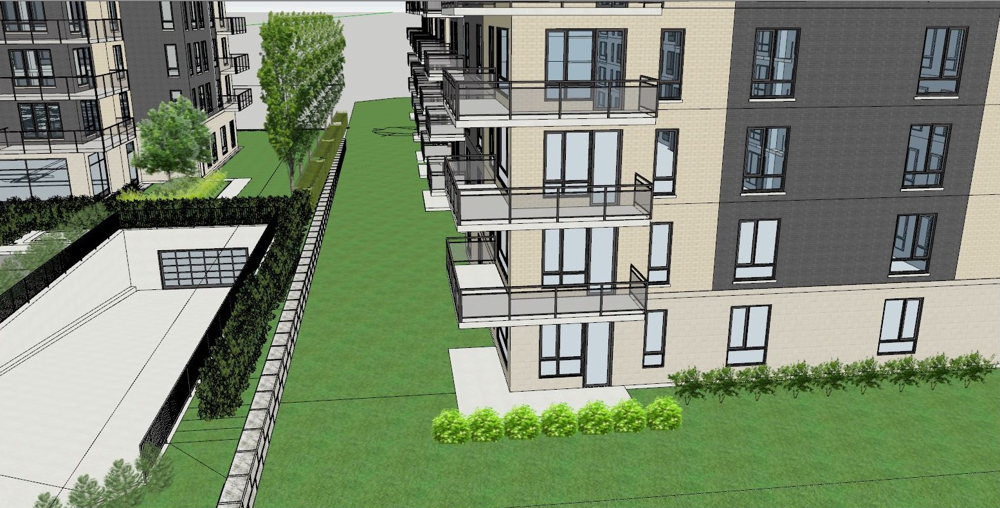
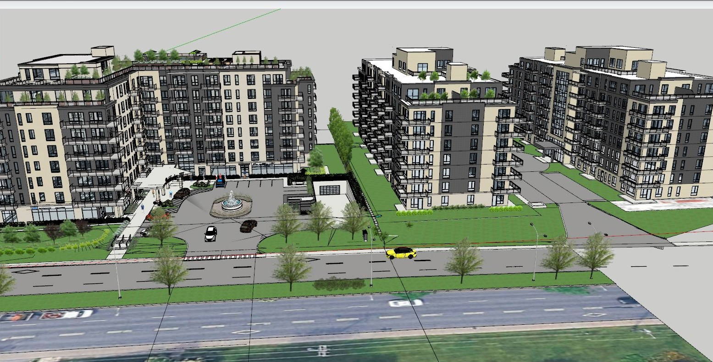

<!doctype html>
<html lang="fr">
<head>
<meta charset="utf-8">
<meta name="viewport" content="width=device-width, initial-scale=1">
<title>ça fitte — option C · ce qui se répète</title>
<link rel="icon" href="/favicon.svg" type="image/svg+xml">
<link rel="icon" href="/favicon.ico" sizes="32x32">
<link rel="stylesheet" href="shared.css">
<link rel="stylesheet" href="plateforme.css">
<style>
/* Option C ajoute quatre écrans à la base B. Rien de neuf dans le système :
   les mêmes cartes, les mêmes tableaux, la même règle du trait. */
.ligne-reg { display: grid; grid-template-columns: 1fr auto; gap: 10px; align-items: start;
  width: 100%; padding: 11px 13px; border-bottom: 1px solid var(--line); text-align: left; }
.ligne-reg:hover { background: var(--paper-2); }
.ligne-reg[aria-selected="true"] { background: var(--accent-soft); }
.ligne-reg .ref { font-family: var(--mono); font-size: 11px; color: var(--ink-3); display: block; margin-bottom: 3px; }
.ligne-reg .ti { font-size: var(--t-body); font-weight: 560; display: block; line-height: 1.35; }
.ligne-reg .me { font-size: var(--t-meta); color: var(--ink-2); display: block; margin-top: 3px; }
.etat.manque { border-color: var(--line-3); color: var(--ink-2); }
.etat.manque::before { background: var(--line-3); }
.etat.derog { background: var(--ink); border-color: var(--ink); color: #fff; }
.etat.derog::before { background: var(--accent); }
.cite { border-left: 2px solid var(--line-2); padding: 2px 0 2px 11px; font-size: var(--t-meta);
  line-height: 1.5; color: var(--ink-2); }
.tache { display: flex; gap: 9px; align-items: flex-start; padding: 9px 0; border-bottom: 1px solid var(--line); width: 100%; text-align: left; }
.tache:last-child { border-bottom: 0; }
.tache .case { width: 15px; height: 15px; flex: 0 0 15px; margin-top: 1px; border: 1.5px solid var(--line-3);
  border-radius: 4px; display: grid; place-items: center; background: var(--paper); }
.tache[aria-pressed="true"] .case { background: var(--accent-dk); border-color: var(--accent-dk); }
.tache[aria-pressed="true"] .case svg { width: 10px; height: 10px; stroke: #fff; stroke-width: 3; }
.tache .case svg { display: none; }
.tache[aria-pressed="true"] .case svg { display: block; }
.tache .t { flex: 1; font-size: var(--t-body); line-height: 1.4; }
.tache[aria-pressed="true"] .t { color: var(--ink-2); text-decoration: line-through; text-decoration-color: var(--line-2); }
.tache .t em { display: block; font-style: normal; font-size: var(--t-meta); color: var(--ink-3); margin-top: 2px; }
.pourquoi { border: 1px solid var(--accent-line); background: var(--accent-soft); border-radius: var(--r); padding: 11px; }
.motifs { display: flex; flex-wrap: wrap; gap: 6px; margin: 8px 0 9px; }
.motifs button { border: 1px solid var(--line-2); background: var(--paper); border-radius: var(--r-pill);
  padding: 4px 9px; font-size: var(--t-meta); }
.motifs button[aria-pressed="true"] { border-color: var(--accent-dk); background: #fff; font-weight: 600; }
.sans-trace { display: flex; gap: 8px; align-items: baseline; font-size: var(--t-meta); color: var(--ink-2); }
</style>
</head>
<body>
<div class="shell" id="shell"></div>
<div class="voile" id="voile" hidden></div>
<script src="plateforme.js"></script>
<script>
/* OPTION C — « ce qui se répète »
   Base : l'option B, unités + plan + volumétrie. On y ajoute les quatre
   vérifications que Guy et Benoît refont à la main à chaque révision :
   les quantités, le règlement, la coordination entre disciplines et le suivi
   des échéances. ça fitte mesure et date ; l'interprétation reste humaine,
   et chaque décision demande sa raison avant d'être consignée. */

const S = {
  page: "apercu", projet: "bal", niveau: 5, unite: "9", ec: "F-05-09",
  vue: "Les deux", onglet: "ouvertures", typologie: false,
  quant: "logements", regle: "Z-09", coord: "C-05-02", phase: "CCU",
  motif: null, enCours: null,
};

/* ------------------------------------------------------- icônes en plus */

Object.assign(TRACES, {
  livre: '<path d="M4 5.5A2.5 2.5 0 0 1 6.5 3H19v15H6.5A2.5 2.5 0 0 0 4 20.5z"/><path d="M4 20.5A2.5 2.5 0 0 1 6.5 18H19v3H6.5A2.5 2.5 0 0 1 4 20.5z"/>',
  calendrier: '<rect x="3" y="5" width="18" height="16" rx="2"/><path d="M3 10h18M8 3v4M16 3v4"/>',
  regle: '<rect x="2" y="7" width="20" height="10" rx="1.5"/><path d="M7 7v4M11 7v6M15 7v4M19 7v6"/>',
  liste: '<path d="M8 6h13M8 12h13M8 18h13M3.5 6h.01M3.5 12h.01M3.5 18h.01"/>',
  horloge: '<circle cx="12" cy="12" r="9"/><path d="M12 7v5l3 2"/>',
});

/* ------------------------------------------------- quantités (Benoît) */

const PI2 = UNITES.reduce((s, u) => s + u.pi2, 0);
const NIV_LOG = [2, 3, 4, 5, 6, 7, 8];

const NIVEAUX = [
  { n: "00", usage: "Stationnement", log: 0, pi2: 11240, src: "BAL3_Niveau_00.dwg" },
  { n: "0", usage: "Commerce et hall", log: 0, pi2: 9850, src: "BAL3_Niveau_0.dwg" },
  { n: "1", usage: "Commerce", log: 0, pi2: 9320, src: "BAL3_Niveau_0.dwg" },
  ...NIV_LOG.map((n) => ({ n: String(n), usage: "Logements", log: UNITES.length, pi2: PI2, src: "BAL3_Etage_Type.dwg" })),
];

/* Types d'ouvertures relevés dans les blocs du plan d'étage type. Le dernier
   niveau porte deux baies de moins : l'attique a été retiré en option 2. */
const FENETRES = [
  { code: "F1", dim: "1500 × 1500", genre: "Fixe + battant", type: 34, dernier: 32 },
  { code: "F2", dim: "1800 × 1500", genre: "Fixe + battant", type: 18, dernier: 18 },
  { code: "F3", dim: "2400 × 1500", genre: "Fixe, trois vantaux", type: 9, dernier: 8 },
  { code: "PF", dim: "1800 × 2100", genre: "Porte-fenêtre balcon", type: 14, dernier: 14 },
  { code: "F4", dim: "600 × 1500", genre: "Fixe, salle de bain", type: 11, dernier: 11 },
];

/* Surfaces de matériaux lues dans les hachures des feuilles d'élévation,
   ouvertures déduites. À confirmer contre le devis. */
const MATERIAUX = [
  { nom: "Brique d'argile, format métrique", sud: 212.4, nord: 238.1, est: 96.5, ouest: 101.2 },
  { nom: "Panneau métallique, joint debout", sud: 84.6, nord: 61.3, est: 42.8, ouest: 39.4 },
  { nom: "Vitrage, cadre aluminium", sud: 74.2, nord: 52.8, est: 18.6, ouest: 17.9 },
  { nom: "Béton apparent, socle", sud: 38.8, nord: 38.8, est: 24.1, ouest: 24.1 },
];

const QUANT_SRC = {
  logements: "BAL3_Etage_Type.dwg · R04 · lu il y a 6 min",
  superficies: "BAL3_Etage_Type.dwg, BAL3_Niveau_0.dwg, BAL3_Niveau_00.dwg",
  ouvertures: "BAL3_Etage_Type.dwg · blocs F1 à F4, PF",
  materiaux: "BAL3_Elevations.dwg · hachures des quatre élévations",
};

/* ------------------------------------------------- règlement (Guy) */

const REGLES = [
  {
    id: "Z-09", source: "Règlement d'urbanisme 01-282", art: "art. 9", titre: "Hauteur maximale en étages",
    exige: "La hauteur d'un bâtiment ne peut excéder 8 étages hors-sol dans un secteur de la catégorie H.7.",
    mesure: "8 étages", attendu: "8 étages maximum", etat: "conforme",
    lecture: "Le nombre d'étages vient de la volumétrie, pas d'une saisie. Si un niveau est ajouté au modèle, cette ligne change le jour même.",
    dou: "BAL3_Volumetrie_Opt2.skp", manque: [], maj: "il y a 31 min",
  },
  {
    id: "Z-43", source: "Règlement d'urbanisme 01-282", art: "art. 43", titre: "Taux d'implantation",
    exige: "Le taux d'implantation au sol ne peut excéder 70 % de la superficie du terrain.",
    mesure: null, attendu: "70 % maximum", etat: "intrant",
    lecture: "L'empreinte du bâtiment est mesurable sur le niveau 00. La superficie du terrain, non : elle vient du certificat de localisation, qui n'est pas une source connectée.",
    dou: "BAL3_Niveau_00.dwg", manque: ["Superficie du terrain", "Certificat de localisation"], maj: "il y a 2 h",
  },
  {
    id: "Z-22", source: "Règlement d'urbanisme 01-282", art: "art. 22", titre: "Marge arrière minimale",
    exige: "La marge arrière minimale est de 3,00 m pour un bâtiment de plus de 4 étages.",
    mesure: "2,70 m", attendu: "3,00 m minimum", etat: "derogation",
    lecture: "Écart de 300 mm sur la marge arrière, mesuré au plan d'implantation. C'est le gabarit d'une demande de dérogation mineure : à confirmer avec l'urbaniste avant le dépôt au CCU.",
    dou: "BAL3_Niveau_00.dwg", manque: ["Confirmation de la limite arrière au certificat"], maj: "il y a 2 h",
  },
  {
    id: "Z-71", source: "Règlement d'urbanisme 01-282", art: "art. 71", titre: "Unités de stationnement",
    exige: "0,5 unité de stationnement par logement, réductible à 0,25 à moins de 500 m d'une station de métro.",
    mesure: "31 cases pour 98 logements", attendu: "49 cases, ou 25 avec la réduction", etat: "a-verifier",
    lecture: "Avec la réduction de proximité, 25 cases suffisent et le projet en compte 31. Sans la réduction, il en manque 18. La distance à la station décide, et elle n'est pas dans les dessins.",
    dou: "BAL3_Niveau_00.dwg", manque: ["Distance à la station de métro"], maj: "il y a 2 h",
  },
  {
    id: "Z-134", source: "Règlement d'urbanisme 01-282", art: "art. 134", titre: "Taux de verdissement",
    exige: "20 % de la superficie du terrain non bâtie doit être végétalisée.",
    mesure: null, attendu: "20 % minimum", etat: "intrant",
    lecture: "Rien dans les dessins connectés ne décrit l'aménagement extérieur. Le plan d'aménagement paysager viendra de l'architecte paysagiste.",
    dou: "—", manque: ["Plan d'aménagement paysager", "Superficie du terrain"], maj: "—",
  },
  {
    id: "C-3231", source: "CNB 2015, modifié Québec", art: "art. 3.2.3.1", titre: "Baies non protégées, façade de rayonnement",
    exige: "La surface maximale des baies non protégées dépend de la distance limitative et de la surface de la façade de rayonnement.",
    mesure: vg(IMPACT.apres) + " m² sur " + vg(IMPACT.surfaceFacade) + " m² (" + vg(IMPACT.pcApres) + " %)",
    attendu: "selon le tableau 3.2.3.1.B", etat: "a-verifier",
    lecture: "ça fitte mesure la surface vitrée de la façade sud et son évolution entre deux révisions. Il ne conclut pas à la conformité : quatre intrants décident, et aucun n'est dans le dessin.",
    dou: "BAL3_Etage_Type.dwg + volumétrie", manque: IMPACT.manquants, maj: "il y a 6 min",
  },
  {
    id: "C-3311", source: "CNB 2015, modifié Québec", art: "art. 3.3.1.9", titre: "Distance de parcours jusqu'à une issue",
    exige: "La distance de parcours jusqu'à une issue ne doit pas excéder 45 m dans un bâtiment protégé par gicleurs.",
    mesure: "38,6 m, corridor du niveau type", attendu: "45 m maximum", etat: "conforme",
    lecture: "Le parcours est mesuré le long de l'axe du corridor, de la porte la plus éloignée à l'issue. Le résultat dépend de la présence de gicleurs : à confirmer au devis.",
    dou: "BAL3_Etage_Type.dwg", manque: ["Présence de gicleurs confirmée au devis"], maj: "il y a 6 min",
  },
];

const ETAT_REG = {
  conforme: ["regle", "conforme"],
  "a-verifier": ["ouvert", "à vérifier"],
  intrant: ["manque", "intrant manquant"],
  derogation: ["derog", "dérogation possible"],
};

/* --------------------------------------- coordination entre disciplines */

const CONFLITS = [
  {
    id: "C-05-02", niveau: 5, genre: "croisement", etat: "ouvert",
    quoi: "Gaine 400 × 300 à travers la colonne C-4",
    ou: "Corridor, axe 4 · près de l'unité 7",
    disciplines: ["25058_Mecanique.dwg · R02", "25058_Structure.dwg · R03"],
    note: "La gaine d'alimentation du corridor traverse l'emprise de la colonne sur 180 mm. Les deux dessins sont à jour ; c'est leur superposition qui ne tient pas.",
    geo: { a: [120, 70, 60, 60], b: [60, 88, 200, 26] }, unite: "7",
  },
  {
    id: "C-05-07", niveau: 5, genre: "croisement", etat: "ouvert",
    quoi: "Poutre PB-12 sous la hauteur libre du salon",
    ou: "Unité 12 · salon / cuisine",
    disciplines: ["25058_Structure.dwg · R03", "BAL3_Etage_Type.dwg · R04"],
    note: "Le dessous de poutre tombe à 2 290 mm du plancher fini. Le plan d'architecture annonce 2 400 mm libres dans la pièce.",
    geo: { a: [80, 60, 220, 22], b: [80, 96, 220, 54] }, unite: "12",
  },
  {
    id: "C-TT-03", niveau: 0, genre: "alignement", etat: "ouvert",
    quoi: "Drain de toit DT-2 non aligné sur la colonne C-7",
    ou: "Toiture vers niveau 00 · décalage 310 mm",
    disciplines: ["25058_Mecanique.dwg · R02", "25058_Structure.dwg · R03"],
    note: "La descente pluviale doit suivre la colonne sur huit niveaux. Au toit elle part à 310 mm de l'axe ; au niveau 00 elle y revient. Un des deux dessins a bougé.",
    geo: { a: [150, 40, 40, 150], b: [181, 40, 18, 150] }, unite: null,
  },
  {
    id: "C-05-11", niveau: 5, genre: "manquant", etat: "ouvert",
    quoi: "Colonne C-3 absente au niveau 5",
    ou: "Présente aux niveaux 2 et 8",
    disciplines: ["25058_Structure.dwg · R03"],
    note: "La colonne est dessinée aux niveaux 2 et 8 au même axe. Au niveau 5, rien. Oubli de dessin ou reprise de charge : la structure tranche.",
    geo: { a: [130, 60, 56, 56], b: null }, unite: "11",
  },
  {
    id: "C-02-05", niveau: 2, genre: "croisement", etat: "regle",
    quoi: "Conduit d'évacuation contre la semelle de l'ascenseur",
    ou: "Niveau 2 · gaine technique",
    disciplines: ["25058_Mecanique.dwg · R02", "25058_Structure.dwg · R03"],
    note: "Dégagement ramené à 60 mm.",
    decision: "Corrigé en mécanique — conduit décalé de 150 mm",
    pourquoi: "La semelle ne peut pas bouger, la gaine a 400 mm de jeu.",
    geo: { a: [120, 70, 70, 70], b: [60, 100, 180, 22] }, unite: null,
  },
];

/* ------------------------------------------------- suivi et échéances */

const PHASES = ["Programmation", "Esquisse", "CCU", "Permis", "Exécution"];

const TACHES = {
  Programmation: [
    { t: "Programme et besoins du client arrêtés", note: "Rencontre du 12 sept", f: true },
    { t: "Zonage du secteur relevé et daté", note: "01-282, consulté le 14 sept", f: true },
    { t: "Édition du code applicable confirmée par écrit", note: "Décide la façade de rayonnement et les issues", f: false },
  ],
  Esquisse: [
    { t: "Volumétrie option retenue", note: "Option 2 · attique retiré au 8e", f: true },
    { t: "Étage type figé en nombre de logements", note: "14 logements, 98 au projet", f: true },
    { t: "Superficies par unité relues sur la feuille", note: "Relu automatiquement à chaque révision", f: true },
    { t: "Marge arrière validée avec l'urbaniste", note: "2,70 m mesurés pour 3,00 m exigés", f: false },
  ],
  CCU: [
    { t: "Tableau des superficies par étage", note: "Généré depuis les plans", f: true },
    { t: "Répartition des typologies", note: "Généré depuis les plans", f: true },
    { t: "Élévations avec surfaces de matériaux", note: "Généré depuis les élévations", f: true },
    { t: "Demande de dérogation mineure rédigée", note: "Marge arrière · art. 22", f: false },
    { t: "Note au conseiller en aménagement", note: "Articles cités, valeurs mesurées, intrants manquants", f: false },
  ],
  Permis: [
    { t: "Analyse du code en 10 pages", note: "Reprise à chaque révision majeure", f: false },
    { t: "Coordination mécanique et structure réglée", note: "4 croisements ouverts", f: false },
    { t: "Plans d'exécution émis", note: "", f: false },
  ],
  Exécution: [
    { t: "Carnet de révisions à jour", note: "Chaque décision porte sa raison", f: true },
    { t: "Demandes d'information suivies", note: "", f: false },
  ],
};

const ECHEANCES = [
  { d: "14 nov", j: 19, quoi: "Dépôt au CCU", det: "Tableau des superficies, élévations, dérogation mineure", urgent: false },
  { d: "7 nov", j: 12, quoi: "Réponse attendue de l'urbaniste", det: "Marge arrière · demandée le 14 oct, relancée le 21", urgent: true },
  { d: "21 nov", j: 26, quoi: "Émission pour permis", det: "Coordination mécanique et structure à clore avant", urgent: false },
];

const APPROBATIONS = [
  { d: "14 oct", quoi: "Question envoyée à l'urbaniste", det: "Marge arrière et dérogation mineure", etat: "en attente" },
  { d: "28 sept", quoi: "Avis préliminaire de la Ville", det: "Gabarit et implantation jugés recevables", etat: "reçu" },
  { d: "12 sept", quoi: "Programme accepté par le client", det: "98 logements, commerce au rez-de-chaussée", etat: "reçu" },
];

const MOTIFS = ["Demande du client — coût", "Ajustement structure", "Exigence du code", "Demande de la Ville", "Erreur de dessin", "Coordination mécanique"];

/* ------------------------------------------------------------- dérivés */

const regPar = (id) => REGLES.find((r) => r.id === id);
const conflitPar = (id) => CONFLITS.find((c) => c.id === id);
const conflitsOuverts = () => CONFLITS.filter((c) => c.etat === "ouvert");
const aVerifier = () => REGLES.filter((r) => r.etat !== "conforme");
const derogations = () => REGLES.filter((r) => r.etat === "derogation");
const intrantsManquants = () => {
  const s = new Set();
  REGLES.forEach((r) => r.manque.forEach((m) => s.add(m)));
  return [...s];
};
const dus = () => ECHEANCES.filter((e) => e.urgent);
const pi2 = (m2) => Math.round(m2 * 10.764);

const PAGES = () => [
  ["apercu", "Aperçu", "info"],
  ["unites", "Unités", "layers", ouverts().length || null],
  ["quantites", "Quantités", "table"],
  ["reglement", "Règlement", "livre", aVerifier().length || null],
  ["coordination", "Coordination", "lien", conflitsOuverts().length || null],
  ["suivi", "Suivi", "calendrier", dus().length || null],
  ["fichiers", "Fichiers", "file"],
];

/* ------------------------------------------------------------- aperçu */

function apercuHTML() {
  const o = ouverts().length;
  const c = conflitsOuverts().length;
  const v = aVerifier().length;
  return `<div class="dedans">
    <div class="bandeau">
      <span class="vig"></span>
      <div class="txt">
        <h1>${PROJET.nom}</h1>
        <div class="ligne">${ico("pt")}${PROJET.ville}</div>
        <div class="ligne">${ico("building")}${PROJET.etages} étages · ${UNITES.length} logements à l'étage type · ${PROJET.sous}</div>
      </div>
      <div class="bout">
        
        <span class="fondu"></span>
        <span class="coin"><span class="puce vive">${PROJET.statut}</span></span>
      </div>
    </div>

    <div class="carte">
      <header><h2 class="grow">Ce que ça fitte a relu depuis la dernière révision</h2><span class="t-meta">R04 · il y a 6 min</span></header>
      <div class="chiffres" style="grid-template-columns:repeat(4,1fr);border:0;border-radius:0">
        <button class="chiffre${o ? " fort" : ""}" data-act="aller-unites" style="text-align:left">
          <b>${o}<small>écarts</small></b><span>plan 2D contre volumétrie</span></button>
        <button class="chiffre${c ? " fort" : ""}" data-act="aller-coordination" style="text-align:left">
          <b>${c}<small>croisements</small></b><span>mécanique, structure, architecture</span></button>
        <button class="chiffre" data-act="aller-reglement" style="text-align:left">
          <b>${v}<small>à lire</small></b><span>articles non concluants</span></button>
        <button class="chiffre" data-act="aller-quantites" style="text-align:left">
          <b>${NIV_LOG.length * UNITES.length}<small>logements</small></b><span>comptés dans les plans</span></button>
      </div>
    </div>

    <div class="grille g-3">
      <div class="carte">
        <header><h2 class="grow">Les deux sources du projet</h2></header>
        <div class="corps">
          <p class="t-meta" style="line-height:1.5;margin-bottom:12px">Le plan et la volumétrie restent là où ils sont dessinés. ça fitte les lit, les compare et garde la trace de ce qui change.</p>
          <div class="grille g-2">
            <div style="border:1px solid var(--line);border-radius:8px;padding:11px">
              <div class="rang" style="margin-bottom:7px">${ico("drawing")}<b style="font-size:13px">AutoCAD</b></div>
              <div class="t-meta" style="line-height:1.5">3 plans + élévations · étage type en R04</div>
              <div style="margin-top:9px"><button class="btn sm" data-act="aller-fichiers">Voir les fichiers</button></div>
            </div>
            <div style="border:1px solid var(--line);border-radius:8px;padding:11px">
              <div class="rang" style="margin-bottom:7px">${ico("cube")}<b style="font-size:13px">SketchUp</b></div>
              <div class="t-meta" style="line-height:1.5">Volumétrie option 2 · ${SOURCES.skp.rev}</div>
              <div style="margin-top:9px"><button class="btn sm" data-act="aller-unites">Voir l'étage type</button></div>
            </div>
          </div>
        </div>
      </div>

      <div class="carte">
        <header><h2 class="grow">Ce qui bloque</h2><span class="etat ${dus().length ? "attention" : "neutre"}">${dus().length} en retard</span></header>
        <div class="corps serre">
          ${ECHEANCES.map((e) => `<button class="cx${e.urgent ? " alerte" : ""}" data-act="aller-suivi" style="width:100%;text-align:left">
            ${ico(e.urgent ? "alerte" : "horloge")}
            <span class="n" style="text-align:left"><b style="font-weight:600;display:block">${e.quoi}</b><span style="color:var(--ink-2)">${e.det}</span></span>
            <span class="v">${e.d}</span></button>`).join("")}
          <button class="cx" data-act="aller-reglement" style="width:100%;text-align:left">${ico("livre")}
            <span class="n" style="text-align:left"><b style="font-weight:600;display:block">${intrantsManquants().length} intrants manquent</b><span style="color:var(--ink-2)">Sans eux, aucun article ne se conclut</span></span>
            <span class="v">voir</span></button>
        </div>
      </div>

      <div class="carte">
        <header><h2 class="grow">Journal des changements</h2><span class="t-meta">avec la raison</span></header>
        <div class="corps serre">${JOURNAL.slice(0, 6).map(journalRang).join("")}</div>
      </div>
    </div>

    <div class="grille g-2">
      <div class="carte">
        <header><h2 class="grow">Étage type · ${UNITES.length} logements</h2><button class="btn sm" data-act="aller-quantites">Tous les tableaux</button></header>
        <div style="max-height:260px;overflow:auto">
        <table class="tech">
          <thead><tr><th>Unité</th><th>Type</th><th style="text-align:right">pi² net</th><th style="text-align:right">m²</th><th>Ouvertures</th></tr></thead>
          <tbody>${UNITES.map((u) => {
            const e = ecartsUnite(u.id).filter((x) => x.etat === "ouvert").length;
            return `<tr><td><b>NO. ${u.id}</b></td><td class="cle">${u.ty}</td><td class="num">${u.pi2}</td><td class="num">${vg(u.m2)}</td>
              <td>${e ? `<span class="etat ouvert">${e} écart${e > 1 ? "s" : ""}</span>` : `<span class="etat neutre">alignées</span>`}</td></tr>`;
          }).join("")}</tbody>
        </table></div>
      </div>
      <div class="carte">
        <header><h2 class="grow">Répartition des typologies</h2><span class="t-meta">${QUANT_SRC.logements}</span></header>
        <div class="corps serre">${typoRangs()}</div>
      </div>
    </div>
  </div>`;
}

function typoRangs() {
  const t = {};
  UNITES.forEach((u) => { t[u.ty] = (t[u.ty] || 0) + 1; });
  const tot = UNITES.length;
  return Object.entries(t).sort((a, b) => b[1] - a[1]).map(([ty, n]) => `
    <div class="cx"><span class="n">${ty}</span>
      <span style="flex:0 0 120px"><span class="jauge"><i style="width:${(n / tot * 100).toFixed(0)}%"></i></span></span>
      <span class="v">${n} / étage · ${n * NIV_LOG.length} au projet</span></div>`).join("");
}

/* La raison ne s'affiche que là où une personne a tranché : un import n'a
   pas de pourquoi, une décision en a toujours un, même manquant. */
const estDecision = (j) => j.quoi.includes("—");

function journalRang(j) {
  return `<div class="cx" style="align-items:flex-start">
    <span style="width:22px;height:22px;border-radius:5px;background:var(--paper-3);color:var(--ink-2);display:grid;place-items:center;font-size:10px;flex:0 0 22px">${j.qui}</span>
    <span class="n"><b style="font-weight:600;display:block">${j.quoi}</b><span style="color:var(--ink-2)">${j.det}</span>
      ${j.pourquoi ? `<span style="display:block;margin-top:2px;color:var(--accent-dk)">parce que ${j.pourquoi}</span>`
        : estDecision(j) ? `<span style="display:block;margin-top:2px;color:var(--ink-3)">raison non consignée</span>` : ""}</span>
    <span class="v">${j.d}</span>
  </div>`;
}

/* ---------------------------------------------------------- quantités */

function quantitesHTML() {
  const ongl = [["logements", "Logements"], ["superficies", "Superficies par étage"], ["ouvertures", "Ouvertures"], ["materiaux", "Matériaux d'élévation"]];
  return `<div class="dedans">
    <div class="rang">
      <div><h1>Quantités</h1>
        <p class="t-meta" style="margin-top:3px">Comptées dans les dessins à chaque relecture. Aucun chiffre n'est saisi à la main.</p></div>
      <span class="grow"></span>
      <button class="btn sm" data-act="exporter">${ico("table")} Exporter le tableau</button>
    </div>
    <div class="carte">
      <header><div class="onglets" style="border:0;padding:0">${ongl.map(([k, n]) =>
        `<button data-quant="${k}"${S.quant === k ? ' aria-selected="true"' : ""}>${n}</button>`).join("")}</div>
        <span class="grow"></span><span class="t-meta">${QUANT_SRC[S.quant]}</span></header>
      ${quantCorps()}
    </div>
    <div class="avis">${ico("info")}<span><b>Ce que ça fitte ne fait pas</b>Il ne recalcule pas les superficies : il lit celles qui sont écrites sur la feuille. Une polyligne fausse reste fausse, mais elle sera fausse au même endroit à chaque révision, et l'écart apparaîtra.</span></div>
  </div>`;
}

function quantCorps() {
  if (S.quant === "logements") {
    const t = {};
    UNITES.forEach((u) => { t[u.ty] = t[u.ty] || { n: 0, pi2: 0 }; t[u.ty].n++; t[u.ty].pi2 += u.pi2; });
    const lignes = Object.entries(t).sort((a, b) => a[0].localeCompare(b[0]));
    const tot = UNITES.length;
    return `<table class="tech">
      <thead><tr><th>Type</th><th style="text-align:right">Par étage</th><th style="text-align:right">Au projet</th><th style="text-align:right">pi² moyen</th><th style="text-align:right">pi² par étage</th><th style="text-align:right">Part</th></tr></thead>
      <tbody>${lignes.map(([ty, v]) => `<tr>
        <td><b>${ty}</b></td><td class="num">${v.n}</td><td class="num">${v.n * NIV_LOG.length}</td>
        <td class="num">${Math.round(v.pi2 / v.n)}</td><td class="num">${v.pi2}</td>
        <td class="num">${(v.n / tot * 100).toFixed(0)} %</td></tr>`).join("")}
        <tr style="font-weight:600"><td>Total</td><td class="num">${tot}</td><td class="num">${tot * NIV_LOG.length}</td>
          <td class="num">${Math.round(PI2 / tot)}</td><td class="num">${PI2}</td><td class="num">100 %</td></tr>
      </tbody></table>`;
  }
  if (S.quant === "superficies") {
    const totLog = NIVEAUX.reduce((s, n) => s + n.log, 0);
    const totPi2 = NIVEAUX.reduce((s, n) => s + n.pi2, 0);
    return `<table class="tech">
      <thead><tr><th>Niveau</th><th>Usage</th><th style="text-align:right">Logements</th><th style="text-align:right">pi² net</th><th style="text-align:right">m² net</th><th>Lu dans</th></tr></thead>
      <tbody>${[...NIVEAUX].reverse().map((n) => `<tr>
        <td><b>Niveau ${n.n}</b></td><td class="cle">${n.usage}</td><td class="num">${n.log || "—"}</td>
        <td class="num">${n.pi2.toLocaleString("fr-CA")}</td><td class="num">${vg(n.pi2 / 10.764, 0)}</td>
        <td class="cle">${n.src}</td></tr>`).join("")}
        <tr style="font-weight:600"><td>Total</td><td></td><td class="num">${totLog}</td>
          <td class="num">${totPi2.toLocaleString("fr-CA")}</td><td class="num">${vg(totPi2 / 10.764, 0)}</td>
          <td class="cle">pertes de ${PROJET.pertes} non déduites</td></tr>
      </tbody></table>`;
  }
  if (S.quant === "ouvertures") {
    const tot = FENETRES.reduce((s, f) => s + f.type * (NIV_LOG.length - 1) + f.dernier, 0);
    return `<table class="tech">
      <thead><tr><th>Code</th><th>Dimensions (mm)</th><th>Type</th><th style="text-align:right">Étage type</th><th style="text-align:right">Niveaux 2 à 7</th><th style="text-align:right">Niveau 8</th><th style="text-align:right">Total</th></tr></thead>
      <tbody>${FENETRES.map((f) => `<tr>
        <td><b>${f.code}</b></td><td class="num">${f.dim}</td><td class="cle">${f.genre}</td>
        <td class="num">${f.type}</td><td class="num">${f.type * (NIV_LOG.length - 1)}</td><td class="num">${f.dernier}</td>
        <td class="num"><b>${f.type * (NIV_LOG.length - 1) + f.dernier}</b></td></tr>`).join("")}
        <tr style="font-weight:600"><td>Total</td><td></td><td></td>
          <td class="num">${FENETRES.reduce((s, f) => s + f.type, 0)}</td>
          <td class="num">${FENETRES.reduce((s, f) => s + f.type * (NIV_LOG.length - 1), 0)}</td>
          <td class="num">${FENETRES.reduce((s, f) => s + f.dernier, 0)}</td>
          <td class="num">${tot}</td></tr>
      </tbody></table>
      <div style="padding:11px 13px"><div class="avis">${ico("alerte")}<span><b>Deux baies de moins au niveau 8</b>L'attique a été retiré au passage à l'option 2, le 18 octobre. Le compte suit le dessin, pas la note de réunion.</span></div></div>`;
  }
  const tot = (m) => m.sud + m.nord + m.est + m.ouest;
  const grand = MATERIAUX.reduce((s, m) => s + tot(m), 0);
  return `<table class="tech">
    <thead><tr><th>Matériau</th><th style="text-align:right">Sud</th><th style="text-align:right">Nord</th><th style="text-align:right">Est</th><th style="text-align:right">Ouest</th><th style="text-align:right">Total m²</th><th style="text-align:right">Total pi²</th></tr></thead>
    <tbody>${MATERIAUX.map((m) => `<tr>
      <td><b>${m.nom}</b></td><td class="num">${vg(m.sud)}</td><td class="num">${vg(m.nord)}</td>
      <td class="num">${vg(m.est)}</td><td class="num">${vg(m.ouest)}</td>
      <td class="num"><b>${vg(tot(m))}</b></td><td class="num">${pi2(tot(m)).toLocaleString("fr-CA")}</td></tr>`).join("")}
      <tr style="font-weight:600"><td>Total des quatre élévations</td><td></td><td></td><td></td><td></td>
        <td class="num">${vg(grand)}</td><td class="num">${pi2(grand).toLocaleString("fr-CA")}</td></tr>
    </tbody></table>
    <div style="padding:11px 13px"><div class="avis">${ico("info")}<span><b>Ouvertures déduites</b>Les surfaces viennent des hachures des élévations, ouvertures retirées. Le vitrage de la façade sud, ${vg(IMPACT.apres)} m², est le même chiffre que celui de l'article 3.2.3.1 au Règlement.</span></div></div>`;
}

/* ---------------------------------------------------------- règlement */

function reglementHTML() {
  const r = regPar(S.regle) || REGLES[0];
  return `<div class="sous">
    <span class="titre">Règlement et code</span>
    <span class="t-meta">${REGLES.length} articles suivis · ${aVerifier().length} non concluants · ${derogations().length} dérogation possible</span>
    <span class="grow"></span>
    <button class="btn sm" data-act="note-urbaniste">${ico("externe")} Préparer la note à l'urbaniste</button>
  </div>
  <div class="travail">
    <div class="col etroite" style="flex:0 0 330px;width:330px">
      <header><h2 class="grow">Articles</h2><span class="t-meta">${REGLES.length}</span></header>
      <div class="liste">${REGLES.map((x) => {
        const [cls, lab] = ETAT_REG[x.etat];
        return `<button class="ligne-reg" data-regle="${x.id}"${x.id === r.id ? ' aria-selected="true"' : ""}>
          <span><span class="ref">${x.source} · ${x.art}</span>
            <span class="ti">${x.titre}</span>
            <span class="me">${x.mesure ? "mesuré : " + x.mesure : "rien à mesurer dans les dessins"}</span></span>
          <span class="etat ${cls}">${lab}</span></button>`;
      }).join("")}</div>
    </div>

    <div class="scene" style="overflow-y:auto">
      <div class="dedans" style="padding:18px 20px 24px">
        <div class="carte">
          <header><div><span class="mono" style="color:var(--ink-3)">${r.source} · ${r.art}</span>
            <h2 style="margin-top:3px">${r.titre}</h2></div>
            <span class="grow"></span><span class="etat ${ETAT_REG[r.etat][0]}">${ETAT_REG[r.etat][1]}</span></header>
          <div class="corps">
            <p class="cite">« ${r.exige} »</p>
            <div class="chiffres" style="grid-template-columns:1fr 1fr;margin:14px 0">
              <div class="chiffre"><b style="font-size:19px">${r.mesure || "—"}</b><span>mesuré dans les dessins</span></div>
              <div class="chiffre"><b style="font-size:19px">${r.attendu}</b><span>exigé par l'article</span></div>
            </div>
            <p class="t-meta" style="line-height:1.6">${r.lecture}</p>
            <dl class="fiche" style="margin-top:12px">
              <dt>Lu dans</dt><dd class="m">${r.dou}</dd>
              <dt>Dernière lecture</dt><dd class="m">${r.maj}</dd>
            </dl>
            ${r.manque.length ? `<div class="avis" style="margin-top:12px">${ico("alerte")}<span><b>${r.manque.length} intrant${r.manque.length > 1 ? "s" : ""} hors des dessins</b>${r.manque.join(" · ")}. Tant qu'ils manquent, ça fitte montre la mesure et s'arrête là.</span></div>`
              : `<div class="avis marque" style="margin-top:12px">${ico("check")}<span><b>Tous les intrants sont dans les dessins</b>La ligne se remettra à jour seule à la prochaine révision.</span></div>`}
          </div>
        </div>

        ${r.etat === "derogation" ? `<div class="carte">
          <header><h2 class="grow">Dérogation mineure possible</h2></header>
          <div class="corps">
            <p class="t-meta" style="line-height:1.6;margin-bottom:12px">L'écart est mesuré, pas jugé. ça fitte prépare la demande avec la valeur au dessin, l'article visé et la date de la mesure ; le texte de justification reste à écrire.</p>
            <div class="pile">
              <button class="btn lg primaire" data-act="note-urbaniste">Préparer la demande pour le CCU</button>
              <button class="btn lg" data-act="aller-suivi">Voir l'échéance du dépôt</button>
            </div>
          </div>
        </div>` : ""}

        <div class="carte">
          <header><h2 class="grow">Les intrants qui manquent au projet</h2><span class="t-meta">${intrantsManquants().length}</span></header>
          <div class="corps serre">${intrantsManquants().map((m) => {
            const qui = REGLES.filter((x) => x.manque.includes(m)).map((x) => x.art).join(", ");
            return `<div class="cx">${ico("alerte")}<span class="n">${m}</span><span class="v">${qui}</span></div>`;
          }).join("")}</div>
        </div>
      </div>
    </div>
  </div>`;
}

function noteUrbanisteHTML() {
  const d = derogations();
  return `<header><h2 class="grow">Note au conseiller en aménagement</h2><span class="t-meta">brouillon · ${PROJET.nom}</span></header>
    <div class="corps" style="display:flex;flex-direction:column;gap:12px">
      <p class="t-meta" style="line-height:1.6">Le texte est monté avec les valeurs mesurées et les articles suivis. Rien n'est envoyé : la note se copie dans un courriel, et l'argumentaire reste à écrire par la personne qui signe.</p>
      <div style="border:1px solid var(--line);border-radius:8px;padding:14px;background:var(--paper-2);font-size:12.5px;line-height:1.65">
        <p><b>Objet — ${PROJET.nom}, ${PROJET.ville} · demande d'avis préalable au CCU</b></p>
        <p style="margin-top:9px">Les valeurs ci-dessous sont relevées dans les dessins déposés, à la révision du jour.</p>
        <ul style="margin:9px 0 0 18px;padding:0">
          ${d.map((r) => `<li style="margin-bottom:6px"><b>${r.art} — ${r.titre}</b><br>Exigé : ${r.attendu}. Mesuré : ${r.mesure}. Écart à l'exigence, demande de dérogation mineure envisagée.</li>`).join("")}
          ${REGLES.filter((r) => r.etat === "a-verifier").map((r) => `<li style="margin-bottom:6px"><b>${r.art} — ${r.titre}</b><br>Mesuré : ${r.mesure}. Confirmation demandée sur : ${r.manque.join(", ").toLowerCase()}.</li>`).join("")}
        </ul>
        <p style="margin-top:10px">Les mesures proviennent de ${SOURCES.dwg[0].nom} (${SOURCES.dwg[0].rev}) et de ${SOURCES.skp.nom}. Elles seront reprises à chaque révision.</p>
      </div>
      <div class="avis">${ico("info")}<span><b>Ce que la note ne dit pas</b>Elle ne conclut à aucune conformité et ne cite aucune interprétation. Elle donne une valeur, sa source et sa date.</span></div>
    </div>
    <footer><button class="btn lg primaire" data-fermer>Copier le brouillon</button><button class="btn lg" data-fermer>Fermer</button></footer>`;
}

/* ------------------------------------------------------- coordination */

function coordinationHTML() {
  const c = conflitPar(S.coord) || CONFLITS[0];
  return `<div class="sous">
    <span class="titre">Coordination</span>
    ${segments("coordniv", ["Tous les niveaux", "Niveau " + S.niveau], "Tous les niveaux")}
    <span class="t-meta">${conflitsOuverts().length} ouverts · ${CONFLITS.length - conflitsOuverts().length} réglé</span>
    <span class="grow"></span>
    <button class="btn sm" data-act="ouvrir-dwg">${ico("externe")} Ouvrir dans AutoCAD</button>
  </div>
  <div class="travail">
    <div class="col etroite" style="flex:0 0 330px;width:330px">
      <header><h2 class="grow">Superpositions</h2><span class="t-meta">${CONFLITS.length}</span></header>
      <div class="liste">${CONFLITS.map((x) => `<button class="ligne-reg" data-coord="${x.id}"${x.id === c.id ? ' aria-selected="true"' : ""}>
        <span><span class="ref">${x.id} · niveau ${x.niveau} · ${x.genre}</span>
          <span class="ti">${x.quoi}</span>
          <span class="me">${x.ou}</span></span>
        <span class="etat ${x.etat === "regle" ? "regle" : "ouvert"}">${x.etat === "regle" ? "réglé" : "ouvert"}</span></button>`).join("")}</div>
      <div class="legende"><span><i class="plein"></i>architecture</span><span><i class="tirete"></i>ingénierie</span><span><i class="vert"></i>superposition</span></div>
    </div>

    <div class="scene" style="overflow-y:auto">
      <div class="dedans" style="padding:18px 20px 24px">
        <div class="carte">
          <header><div><span class="mono" style="color:var(--ink-3)">${c.id}</span><h2 style="margin-top:3px">${c.quoi}</h2></div>
            <span class="grow"></span><span class="etat ${c.etat === "regle" ? "regle" : "attention"}">${c.etat === "regle" ? "réglé" : "à coordonner"}</span></header>
          <div class="corps">
            <div style="border:1px solid var(--line);border-radius:8px;overflow:hidden;background:#fff;margin-bottom:12px;max-width:420px">${svgConflit(c)}</div>
            <p class="t-meta" style="line-height:1.6">${c.note}</p>
            <dl class="fiche" style="margin-top:12px">
              <dt>Niveau</dt><dd class="m">${c.niveau}</dd>
              <dt>Emplacement</dt><dd>${c.ou}</dd>
              ${c.unite ? `<dt>Unité touchée</dt><dd class="m">NO. ${c.unite}</dd>` : ""}
              ${c.disciplines.map((d, i) => `<dt>${i === 0 ? "Dessins superposés" : "&nbsp;"}</dt><dd class="m">${d}</dd>`).join("")}
            </dl>
            ${c.unite ? `<div style="margin-top:12px"><button class="btn sm" data-act="voir-unite" data-u="${c.unite}">Voir l'unité NO. ${c.unite} sur le plan</button></div>` : ""}
          </div>
        </div>

        <div class="carte">
          <header><h2 class="grow">Décision</h2></header>
          <div class="corps">
            ${c.etat === "regle"
              ? `<dl class="fiche"><dt>Décision</dt><dd>${c.decision}</dd><dt>Raison</dt><dd>${c.pourquoi}</dd></dl>
                 <div style="margin-top:11px"><button class="btn sm" data-act="rouvrir-conflit">Rouvrir</button></div>`
              : S.enCours === c.id ? pourquoiHTML("conflit")
              : `<p class="t-meta" style="line-height:1.6;margin-bottom:11px">ça fitte n'écrit dans aucun dessin. La décision est consignée ici, avec sa raison, et la reprise se fait dans le logiciel d'origine.</p>
                 <div class="pile">
                   <button class="btn lg primaire" data-act="decider" data-choix="Reprise en architecture">Reprise en architecture</button>
                   <button class="btn lg" data-act="decider" data-choix="Reprise par l'ingénieur">Reprise par l'ingénieur</button>
                   <button class="btn sm discret" data-act="decider" data-choix="Rien à reprendre">Rien à reprendre, c'est voulu</button>
                 </div>`}
          </div>
        </div>
      </div>
    </div>
  </div>`;
}

/* Deux rectangles et leur recouvrement : le dessin ne prétend pas être le
   détail, il montre où les deux dessins se touchent. */
function svgConflit(c) {
  const [a, b] = [c.geo.a, c.geo.b];
  const p = ['<rect width="360" height="210" fill="#fff"/>'];
  for (let x = 0; x < 360; x += 18) p.push(`<line x1="${x}" y1="0" x2="${x}" y2="210" stroke="#f2f1ee" stroke-width="1"/>`);
  if (a) p.push(`<rect x="${a[0]}" y="${a[1]}" width="${a[2]}" height="${a[3]}" fill="#111" fill-opacity=".06" stroke="#111" stroke-width="1.6"/>`);
  if (b) p.push(`<rect x="${b[0]}" y="${b[1]}" width="${b[2]}" height="${b[3]}" fill="none" stroke="#111" stroke-width="1.6" stroke-dasharray="6 3.5"/>`);
  if (a && b) {
    const x0 = Math.max(a[0], b[0]), y0 = Math.max(a[1], b[1]);
    const x1 = Math.min(a[0] + a[2], b[0] + b[2]), y1 = Math.min(a[1] + a[3], b[1] + b[3]);
    if (x1 > x0 && y1 > y0) {
      p.push(`<rect x="${x0}" y="${y0}" width="${x1 - x0}" height="${y1 - y0}" fill="#c0d739" fill-opacity=".45" stroke="#5c6b0b" stroke-width="1.4"/>`);
      p.push(`<text x="${(x0 + x1) / 2}" y="${Math.min(a[1], b[1]) - 10}" text-anchor="middle" font-size="12" font-weight="700" font-family="ui-sans-serif,system-ui" fill="#5c6b0b">superposition</text>`);
    }
  }
  if (a && !b) p.push(`<text x="${a[0] + a[2] / 2}" y="${a[1] - 10}" text-anchor="middle" font-size="12" font-weight="600" font-family="ui-sans-serif,system-ui" fill="#5c6b0b">absente au niveau ${c.niveau}</text>`);
  p.push(`<text x="14" y="198" font-size="11" font-family="ui-monospace,monospace" fill="#9a9a9a">${c.id} · ${c.disciplines.length} dessins superposés</text>`);
  return `<svg viewBox="0 0 360 210" preserveAspectRatio="xMidYMid meet">${p.join("")}</svg>`;
}

/* ------------------------------------------------- la raison, toujours */

function pourquoiHTML(quoi) {
  return `<div class="pourquoi">
    <b style="font-size:13px;display:block;margin-bottom:3px">Pourquoi ce changement ?</b>
    <p class="t-meta" style="line-height:1.5">Deux ans plus tard, personne ne retrouve la raison d'un déplacement de balcon. Une ligne suffit, et elle reste attachée à la révision.</p>
    <div class="motifs">${MOTIFS.map((m) => `<button data-motif="${m}"${S.motif === m ? ' aria-pressed="true"' : ""}>${m}</button>`).join("")}</div>
    <label class="champ"><span>Précision</span><textarea id="pq" placeholder="Ce que la prochaine personne doit savoir."></textarea></label>
    <div class="rang" style="margin-top:10px">
      <button class="btn lg primaire grow" data-act="consigner" data-quoi="${quoi}">Consigner la décision</button>
      <button class="btn sm discret" data-act="annuler">Annuler</button>
    </div>
  </div>`;
}

/* -------------------------------------------------------------- suivi */

function suiviHTML() {
  const faites = TACHES[S.phase].filter((t) => t.f).length;
  return `<div class="dedans">
    <div class="rang">
      <div><h1>Suivi</h1>
        <p class="t-meta" style="margin-top:3px">La liste est la même d'un projet à l'autre. Ce qui change, ce sont les drapeaux que les dessins lèvent tout seuls.</p></div>
      <span class="grow"></span>
      <button class="btn sm" data-act="exporter">${ico("liste")} Exporter la liste</button>
    </div>

    <div class="grille g-3">
      <div class="carte">
        <header><h2 class="grow">Échéances</h2></header>
        <div class="corps serre">${ECHEANCES.map((e) => `<div class="cx${e.urgent ? " alerte" : ""}">${ico(e.urgent ? "alerte" : "calendrier")}
          <span class="n"><b style="font-weight:600;display:block">${e.quoi}</b><span style="color:var(--ink-2)">${e.det}</span></span>
          <span class="v">${e.d} · ${e.urgent ? "depuis " + e.j + " j" : "dans " + e.j + " j"}</span></div>`).join("")}</div>
      </div>
      <div class="carte">
        <header><h2 class="grow">Drapeaux levés par les dessins</h2></header>
        <div class="corps serre">
          <button class="cx alerte" data-act="aller-coordination" style="width:100%;text-align:left">${ico("lien")}
            <span class="n" style="text-align:left">Croisements non réglés</span><span class="v">${conflitsOuverts().length}</span></button>
          <button class="cx alerte" data-act="aller-unites" style="width:100%;text-align:left">${ico("alerte")}
            <span class="n" style="text-align:left">Écarts plan / volumétrie</span><span class="v">${ouverts().length}</span></button>
          <button class="cx" data-act="aller-reglement" style="width:100%;text-align:left">${ico("livre")}
            <span class="n" style="text-align:left">Articles non concluants</span><span class="v">${aVerifier().length}</span></button>
          <button class="cx" data-act="aller-reglement" style="width:100%;text-align:left">${ico("regle")}
            <span class="n" style="text-align:left">Intrants hors des dessins</span><span class="v">${intrantsManquants().length}</span></button>
        </div>
      </div>
      <div class="carte">
        <header><h2 class="grow">Échanges avec la Ville</h2></header>
        <div class="corps serre">${APPROBATIONS.map((a) => `<div class="cx">${ico(a.etat === "reçu" ? "check" : "horloge")}
          <span class="n"><b style="font-weight:600;display:block">${a.quoi}</b><span style="color:var(--ink-2)">${a.det}</span></span>
          <span class="v">${a.d}</span></div>`).join("")}</div>
      </div>
    </div>

    <div class="carte">
      <header>
        <div class="onglets" style="border:0;padding:0">${PHASES.map((p) =>
          `<button data-phase="${p}"${S.phase === p ? ' aria-selected="true"' : ""}>${p}</button>`).join("")}</div>
        <span class="grow"></span>
        <span class="t-meta">${faites} sur ${TACHES[S.phase].length}</span>
      </header>
      <div class="corps">
        <div class="barreprog" style="margin-bottom:12px"><i style="width:${(faites / TACHES[S.phase].length * 100).toFixed(0)}%"></i></div>
        ${TACHES[S.phase].map((t, i) => `<button class="tache" data-tache="${i}" aria-pressed="${t.f}">
          <span class="case">${ico("check")}</span>
          <span class="t">${t.t}${t.note ? `<em>${t.note}</em>` : ""}</span></button>`).join("")}
      </div>
    </div>
  </div>`;
}

/* --------------------------------------------------- unités (base B) */

function unitesHTML() {
  const u = uniPar(S.unite);
  const ecs = ecartsUnite(S.unite);
  const ec = ecartPar(S.ec) || ecs[0];
  const deux = S.vue === "Les deux";
  const plan = S.vue !== "Volumétrie 3D";
  const trois = S.vue !== "Plan 2D";
  const cf = CONFLITS.filter((c) => c.unite === S.unite && c.etat === "ouvert");
  return `<div class="sous">
    <span class="titre">Étage type · niveau ${S.niveau}</span>
    ${segments("niveau", ["Niveau 2", "Niveau 5", "Niveau 8"], "Niveau " + S.niveau)}
    ${segments("vue", ["Plan 2D", "Volumétrie 3D", "Les deux"], S.vue)}
    <span class="grow"></span>
    <button class="btn sm" data-act="typo" aria-pressed="${S.typologie}">${S.typologie ? "Masquer la typologie" : "Afficher la typologie"}</button>
    <button class="btn sm" data-act="ouvrir-dwg">${ico("externe")} Ouvrir dans AutoCAD</button>
  </div>
  <div class="travail">
    <div class="col unites">
      <header><h2 class="grow">Unités</h2><span class="t-meta">${UNITES.length}</span></header>
      <div class="liste">${UNITES.map((x) => {
        const n = ecartsUnite(x.id).filter((e) => e.etat === "ouvert").length;
        return `<button class="uni" data-unite="${x.id}"${x.id === S.unite ? ' aria-selected="true"' : ""}>
          <span class="pt ${n ? "att" : "ok"}"></span><b>NO. ${x.id}</b><span class="ty">${x.ty}</span>
          <span class="su">${n ? n + " écart" + (n > 1 ? "s" : "") : x.pi2 + " pi²"}</span></button>`;
      }).join("")}</div>
      <div class="legende"><span><i class="plein"></i>plan 2D</span><span><i class="tirete"></i>volumétrie 3D</span><span><i class="vert"></i>différence</span></div>
    </div>
    <div class="scene">
      <div class="duo ${deux ? "deux" : "une"}">
        ${plan ? `<div class="cadre">
          <div class="tete">Plan d'étage type<span class="src">${SOURCES.dwg[0].nom}</span><span class="grow"></span><span class="src">R04</span></div>
          <div class="aire papier">${vuePlan({ sel: S.unite, typologie: S.typologie })}</div>
        </div>` : ""}
        ${trois ? `<div class="cadre">
          <div class="tete">Volumétrie SketchUp<span class="src">${SOURCES.skp.nom}</span><span class="grow"></span><span class="src">${FACADE_NOM}</span></div>
          <div class="aire skp">
            ${vue3d({ niveau: S.niveau, sel: ec ? ec.id : null })}
            <div class="skp-outils">
              <button aria-pressed="true" title="Orbite">${ico("orbite")}</button>
              <button title="Panoramique">${ico("main")}</button>
              <button title="Zoom">${ico("loupe")}</button>
            </div>
            <span class="skp-mesure">${ec && ec.modele ? ec.modele.l + " × " + ec.modele.h + " mm" : "—"}</span>
          </div>
        </div>` : ""}
      </div>
      <div class="barre-impact">
        <span>Façade ${IMPACT.facade} · ouvertures</span>
        <b>${vg(IMPACT.avant)} m²</b><span>→</span><b>${vg(IMPACT.apres)} m²</b>
        <span class="d">+${vg(IMPACT.ecart)} m²</span>
        <span class="grow"></span>
        <button class="btn sm" data-act="aller-reglement">Lire l'article 3.2.3.1</button>
      </div>
    </div>
    ${inspecteurUnite(u, ecs, ec, cf)}
  </div>`;
}

function inspecteurUnite(u, ecs, ec, cf) {
  const ouv = ecs.filter((e) => e.etat === "ouvert").length;
  const ongl = [["apercu", "Aperçu"], ["ouvertures", `Ouvertures${ouv ? " (" + ouv + ")" : ""}`],
    ["coord", `Coordination${cf.length ? " (" + cf.length + ")" : ""}`], ["histo", "Historique"]];
  let corps = "";
  if (S.onglet === "apercu") {
    corps = `<dl class="fiche">
        <dt>Type</dt><dd>${u.ty}</dd>
        <dt>Superficie nette</dt><dd class="m">${u.pi2} pi²</dd>
        <dt>Superficie (m²)</dt><dd class="m">${vg(u.m2)} m²</dd>
        ${u.pieces.map(([n, d]) => `<dt>${n}</dt><dd class="m">${d}</dd>`).join("")}
      </dl>
      <div class="avis">${ico("info")}<span><b>Source</b>Toutes ces valeurs viennent de <span class="mono">${SOURCES.dwg[0].nom}</span>, lu il y a 6 min. ça fitte ne les recalcule pas.</span></div>`;
  } else if (S.onglet === "ouvertures") {
    corps = ecs.length
      ? ecs.map((e) => `<div style="border:1px solid ${e.id === (ec && ec.id) ? "var(--accent-line)" : "var(--line)"};border-radius:8px;background:${e.id === (ec && ec.id) ? "var(--accent-soft)" : "var(--paper)"}">
          <button class="fen-rang" data-ecart="${e.id}" style="border-bottom:0">
            <span class="vg">${vign(e)}</span>
            <span class="t"><b>${e.id}</b><span>${e.quoi}</span><em>${e.piece} · travée ${e.travee}</em></span>
            <span class="etat ${e.etat === "regle" ? "regle" : "ouvert"}">${e.etat === "regle" ? "réglé" : "ouvert"}</span>
          </button>
          ${e.id === (ec && ec.id) ? `<div style="padding:0 12px 12px">
            <div style="border:1px solid var(--line);border-radius:6px;overflow:hidden;background:#fff;margin-bottom:10px">${svgPreuve(e)}</div>
            <dl class="fiche" style="margin-bottom:10px">
              <dt>Au plan 2D</dt><dd class="m">${e.plan ? e.plan.l + " × " + e.plan.h + " mm" : "absente"}</dd>
              <dt>À la volumétrie</dt><dd class="m">${e.modele ? e.modele.l + " × " + e.modele.h + " mm" : "absente"}</dd>
              <dt>Différence</dt><dd class="m">${e.delta ? e.delta + " mm" : e.genre}</dd>
            </dl>
            <p class="t-meta" style="margin-bottom:10px;line-height:1.45">${e.note}<br><span style="color:var(--ink-3)">${DEPUIS[e.id] || ""}</span></p>
            ${e.etat === "regle"
              ? `<dl class="fiche" style="margin-bottom:10px"><dt>Décision</dt><dd>${e.decision}</dd>
                   <dt>Raison</dt><dd>${e.pourquoi || "non consignée"}</dd></dl>
                 <button class="btn sm" data-act="rouvrir">Rouvrir</button>`
              : S.enCours === e.id ? pourquoiHTML("ecart")
              : `<div class="pile">
                  <button class="btn lg primaire" data-act="decider" data-choix="Corriger le plan 2D dans AutoCAD">Corriger le plan 2D — la 3D est bonne</button>
                  <button class="btn lg" data-act="decider" data-choix="Corriger la volumétrie dans SketchUp">Corriger la 3D — le plan est bon</button>
                  <button class="btn sm discret" data-act="decider" data-choix="Rien à corriger">Ne rien corriger, c'est voulu</button>
                </div>`}
          </div>` : ""}
        </div>`).join("")
      : `<div class="avis">${ico("check")}<span><b>Ouvertures alignées</b>Le plan et la volumétrie concordent sur cette unité.</span></div>`;
  } else if (S.onglet === "coord") {
    corps = cf.length
      ? cf.map((c) => `<button class="cx" data-coord-go="${c.id}" style="width:100%;text-align:left;align-items:flex-start">
          ${ico("lien")}<span class="n" style="text-align:left"><b style="font-weight:600;display:block">${c.quoi}</b>
            <span style="color:var(--ink-2)">${c.disciplines.join(" · ")}</span></span>
          <span class="v">voir</span></button>`).join("")
        + `<div class="avis">${ico("info")}<span><b>Deux disciplines, deux dessins</b>Le croisement est détecté en superposant les calques, jamais en redessinant.</span></div>`
      : `<div class="avis">${ico("check")}<span><b>Rien à coordonner ici</b>Aucune superposition relevée entre l'architecture, la structure et la mécanique sur cette unité.</span></div>`;
  } else {
    corps = JOURNAL.map((j) => `<div style="padding:9px 0;border-bottom:1px solid var(--line)">
      <div class="rang"><b style="font-size:12px">${j.quoi}</b><span class="grow"></span><span class="mono" style="color:var(--ink-3)">${j.d}</span></div>
      <p class="t-meta" style="margin-top:3px">${j.det} · ${j.qui}</p>
      ${j.pourquoi ? `<p class="t-meta" style="margin-top:2px;color:var(--accent-dk)">parce que ${j.pourquoi}</p>`
        : estDecision(j) ? `<p class="t-meta" style="margin-top:2px;color:var(--ink-3)">raison non consignée</p>` : ""}</div>`).join("");
  }
  return `<div class="insp">
    <header><div class="rang"><h2 class="grow">NO. ${u.id}</h2>
      <span class="etat ${ouv ? "attention" : "neutre"}">${ouv ? ouv + " à coordonner" : "alignée"}</span></div>
      <p class="t-meta" style="margin:4px 0 10px">${u.ty} · ${u.pi2} pi² net · niveau ${S.niveau}</p></header>
    <div class="onglets">${ongl.map(([k, n]) => `<button data-onglet="${k}"${S.onglet === k ? ' aria-selected="true"' : ""}>${n}</button>`).join("")}</div>
    <div class="corps">${corps}</div>
  </div>`;
}

/* ----------------------------------------------------------- fichiers */

function fichiersHTML() {
  const ligne = (f, k) => `<tr><td>${ico(k)} <b style="font-weight:500">${f.nom}</b></td><td class="cle">${f.type}</td><td class="num">${f.rev}</td><td class="cle">${f.maj}</td><td class="num">${f.taille}</td></tr>`;
  const ing = [
    { nom: "25058_Structure.dwg", type: "Structure · ingénieur", rev: "R03", maj: "il y a 1 j", taille: "7,9 Mo" },
    { nom: "25058_Mecanique.dwg", type: "Mécanique · ingénieur", rev: "R02", maj: "il y a 3 j", taille: "9,2 Mo" },
    { nom: "BAL3_Elevations.dwg", type: "Élévations", rev: "R04", maj: "il y a 6 min", taille: "5,2 Mo" },
  ];
  return `<div class="dedans">
    <div class="carte">
      <header><h2 class="grow">Sources connectées</h2><button class="btn sm" data-act="resync">${ico("sync")} Relire les sources</button></header>
      <table class="tech">
        <thead><tr><th>Fichier</th><th>Type</th><th style="text-align:right">Révision</th><th>Dernière lecture</th><th style="text-align:right">Taille</th></tr></thead>
        <tbody>${SOURCES.dwg.map((f) => ligne(f, "drawing")).join("")}${ing.map((f) => ligne(f, "drawing")).join("")}${ligne(SOURCES.skp, "cube")}</tbody>
      </table>
    </div>
    <div class="carte">
      <header><h2 class="grow">Journal des changements</h2><span class="t-meta">la raison voyage avec la révision</span></header>
      <div class="corps serre">${JOURNAL.map(journalRang).join("")}</div>
    </div>
    <div class="avis">${ico("info")}<span><b>Lecture seule</b>ça fitte ne pilote ni AutoCAD ni SketchUp et n'écrit jamais dans un fichier de dessin. Il lit, compare, date, et garde la raison des décisions.</span></div>
  </div>`;
}

function autreProjetHTML(k) {
  const a = { cmr: { nom: "Condo Mont-Royal", etages: 4, skp: true, ecarts: 2 }, be: { nom: "Beaubien Est", etages: 6, skp: false, ecarts: 0 } }[k];
  return `<div class="dedans">
    <div class="bandeau"><div class="txt" style="padding:18px"><h1>${a.nom}</h1>
      <div class="ligne">${ico("pt")}Montréal (QC)</div>
      <div class="ligne">${ico("building")}${a.etages} étages</div></div></div>
    ${a.skp ? `<div class="avis marque">${ico("check")}<span><b>Les deux sources sont connectées</b>${a.ecarts} écarts ouverts sur ce projet.</span></div>`
      : `<div class="carte"><div class="corps">
          <h2 style="margin-bottom:6px">Connecter les sources de ce projet</h2>
          <p class="t-meta" style="line-height:1.5;margin-bottom:14px">Rien n'est encore comparé. Pointez le dossier des plans et la volumétrie pour que ça fitte commence à suivre les changements.</p>
          <div class="grille g-2">
            <button class="depot" data-act="brancher">${ico("drawing")}<span class="t">Connecter les plans AutoCAD</span><span class="f">DWG · étage type, niveaux</span></button>
            <button class="depot" data-act="brancher">${ico("cube")}<span class="t">Connecter la volumétrie SketchUp</span><span class="f">SKP · volume du bâtiment</span></button>
          </div>
        </div></div>`}
  </div>`;
}

/* ------------------------------------------------------------- rendu */

function pageHTML() {
  if (S.projet !== "bal") return autreProjetHTML(S.projet);
  switch (S.page) {
    case "apercu": return apercuHTML();
    case "unites": return unitesHTML();
    case "quantites": return quantitesHTML();
    case "reglement": return reglementHTML();
    case "coordination": return coordinationHTML();
    case "suivi": return suiviHTML();
    case "fichiers": return fichiersHTML();
    default: return `<div class="dedans"><div class="carte"><p class="vide">Hors du périmètre de ce prototype.</p></div></div>`;
  }
}

function rendre() {
  const plein = S.projet === "bal" && ["unites", "reglement", "coordination"].includes(S.page);
  $("#shell").innerHTML = railIcones("projets") +
    `<div class="vue">${ongletsProjets(S.projet)}${ongletsPages(S.page, PAGES(), `<span class="puce">${ico("sync")} lu il y a 6 min</span>`)}
      <main class="page${plein ? " plein" : ""}">${pageHTML()}</main></div>`;
}

/* ----------------------------------------------------------- actions */

/* Une décision ne s'enregistre jamais seule : on ouvre d'abord la raison. */
function demander(id, choix) {
  S.enCours = id;
  S.choix = choix;
  S.motif = null;
  rendre();
}

function consigner(quoi) {
  const txt = ($("#pq") && $("#pq").value.trim()) || "";
  const raison = [S.motif, txt].filter(Boolean).join(" — ");
  if (!raison) {
    const champ = $("#pq");
    if (champ) { champ.focus(); champ.placeholder = "Une raison, même courte, avant de consigner."; }
    return;
  }
  if (quoi === "ecart") {
    const e = ecartPar(S.enCours);
    e.etat = "regle";
    e.decision = S.choix;
    e.pourquoi = raison;
    DEPUIS[e.id] = "Réglé aujourd'hui par " + MOI.init;
    JOURNAL.unshift({ d: "aujourd'hui · maintenant", qui: MOI.init, quoi: `${e.id} — ${S.choix}`, det: `NO. ${e.unite} · ${e.piece}`, pourquoi: raison });
  } else {
    const c = conflitPar(S.enCours);
    c.etat = "regle";
    c.decision = S.choix;
    c.pourquoi = raison;
    JOURNAL.unshift({ d: "aujourd'hui · maintenant", qui: MOI.init, quoi: `${c.id} — ${S.choix}`, det: c.quoi, pourquoi: raison });
  }
  S.enCours = null;
  S.motif = null;
  rendre();
}

$("#shell").addEventListener("click", (ev) => {
  const t = ev.target;
  const nav = t.closest("[data-nav]");
  const pj = t.closest("[data-projet]");
  const nouveau = t.closest("[data-nouveau]");
  const seg = t.closest("[data-seg] button");
  const ecart = t.closest("[data-ecart]");
  const uni = t.closest("[data-unite]");
  const ong = t.closest("[data-onglet]");
  const quant = t.closest("[data-quant]");
  const regle = t.closest("[data-regle]");
  const coord = t.closest("[data-coord]");
  const coordGo = t.closest("[data-coord-go]");
  const phase = t.closest("[data-phase]");
  const tache = t.closest("[data-tache]");
  const motif = t.closest("[data-motif]");
  const act = t.closest("[data-act]");

  if (nouveau) return ouvrirVoile();
  if (pj) { S.projet = pj.dataset.projet; S.page = "apercu"; return rendre(); }
  if (nav) {
    const k = nav.dataset.nav;
    if (["projets", "param"].includes(k)) return;
    S.page = k; S.projet = "bal"; S.enCours = null; return rendre();
  }
  if (seg) {
    const nom = seg.closest("[data-seg]").dataset.seg, v = seg.dataset.val;
    if (nom === "niveau") {
      S.niveau = +v.replace(/\D/g, "");
      const c = ecartsNiveau(S.niveau)[0];
      if (c) { S.ec = c.id; S.unite = c.unite; }
    }
    if (nom === "vue") S.vue = v;
    if (nom === "coordniv") S.coordNiv = v;
    return rendre();
  }
  if (motif) { S.motif = S.motif === motif.dataset.motif ? null : motif.dataset.motif; return rendre(); }
  if (quant) { S.quant = quant.dataset.quant; return rendre(); }
  if (regle) { S.regle = regle.dataset.regle; return rendre(); }
  if (coordGo) { S.page = "coordination"; S.coord = coordGo.dataset.coordGo; return rendre(); }
  if (coord) { S.coord = coord.dataset.coord; S.enCours = null; return rendre(); }
  if (phase) { S.phase = phase.dataset.phase; return rendre(); }
  if (tache) {
    const i = +tache.dataset.tache;
    const item = TACHES[S.phase][i];
    item.f = !item.f;
    JOURNAL.unshift({ d: "aujourd'hui · maintenant", qui: MOI.init, quoi: `${S.phase} — ${item.f ? "coché" : "décoché"}`, det: item.t, pourquoi: null });
    return rendre();
  }
  if (ong) { S.onglet = ong.dataset.onglet; return rendre(); }
  if (ecart && ecart.dataset.ecart) {
    const e = ecartPar(ecart.dataset.ecart);
    S.ec = e.id; S.unite = e.unite; S.niveau = e.niveau; S.onglet = "ouvertures"; S.enCours = null; return rendre();
  }
  if (uni) {
    S.unite = uni.dataset.unite; S.onglet = "ouvertures"; S.enCours = null;
    const e = ecartsUnite(S.unite)[0];
    S.ec = e ? e.id : null;
    return rendre();
  }
  if (act) {
    const a = act.dataset.act;
    const va = { "aller-unites": "unites", "aller-fichiers": "fichiers", "aller-quantites": "quantites",
      "aller-reglement": "reglement", "aller-coordination": "coordination", "aller-suivi": "suivi" }[a];
    if (va) { S.page = va; return rendre(); }
    if (a === "typo") { S.typologie = !S.typologie; return rendre(); }
    if (a === "voir-unite") { S.page = "unites"; S.unite = act.dataset.u; S.onglet = "coord"; return rendre(); }
    if (a === "decider") return demander(S.page === "coordination" ? S.coord : S.ec, act.dataset.choix);
    if (a === "consigner") return consigner(act.dataset.quoi);
    if (a === "annuler") { S.enCours = null; S.motif = null; return rendre(); }
    if (a === "rouvrir") { const e = ecartPar(S.ec); e.etat = "ouvert"; delete e.decision; delete e.pourquoi; return rendre(); }
    if (a === "rouvrir-conflit") { const c = conflitPar(S.coord); c.etat = "ouvert"; delete c.decision; delete c.pourquoi; return rendre(); }
    if (a === "resync") return resync(act);
    if (a === "ouvrir-dwg") return ouvrirVoile("dwg");
    if (a === "brancher") return ouvrirVoile("brancher");
    if (a === "note-urbaniste") return ouvrirVoile("note");
    if (a === "exporter") return ouvrirVoile("export");
  }
});

function resync(btn) {
  btn.disabled = true;
  btn.innerHTML = ico("sync") + " Lecture des fichiers…";
  setTimeout(() => {
    JOURNAL.unshift({ d: "aujourd'hui · maintenant", qui: MOI.init, quoi: "Sources relues", det: "Aucun changement depuis la dernière lecture", pourquoi: null });
    rendre();
  }, 1100);
}

function ouvrirVoile(quoi) {
  const v = $("#voile");
  const corps = quoi === "note" ? noteUrbanisteHTML()
    : quoi === "export"
    ? `<header><h2 class="grow">Exporter</h2></header>
       <div class="corps"><p class="t-meta" style="line-height:1.6">Le tableau part en CSV et en PDF, avec le nom du fichier source, sa révision et l'heure de lecture en pied de page. Dans le prototype, l'export n'écrit rien sur le poste.</p></div>
       <footer><button class="btn lg primaire" data-fermer>J'ai compris</button></footer>`
    : quoi === "dwg"
    ? `<header><h2 class="grow">Ouvrir dans AutoCAD</h2></header>
       <div class="corps"><p class="t-meta" style="line-height:1.6">ça fitte ne pilote pas AutoCAD et n'écrit jamais dans un fichier de dessin. Le lien ouvre <span class="mono">${SOURCES.dwg[0].nom}</span> sur le poste. La reprise se fait à la main, dans AutoCAD.</p></div>
       <footer><button class="btn lg primaire" data-fermer>J'ai compris</button></footer>`
    : quoi === "brancher"
    ? `<header><h2 class="grow">Connecter une source</h2></header>
       <div class="corps"><p class="t-meta" style="line-height:1.6">Dans le prototype, les sources sont déjà en place sur ${PROJET.nom}. Sur un projet neuf, on pointe le dossier du serveur : ça fitte relit les fichiers à chaque enregistrement.</p></div>
       <footer><button class="btn lg primaire" data-fermer>Fermer</button></footer>`
    : `<header><h2 class="grow">Ouvrir un projet</h2></header>
       <div class="corps"><div class="pile">
         ${["Rosemont Nord", "Verdun 4e Avenue", "Parc-Extension"].map((n) => `<button class="depot" style="text-align:left" data-fermer>${ico("building")}<span class="t">${n}</span><span class="f">archivé · aucune source connectée</span></button>`).join("")}
       </div></div>
       <footer><button class="btn lg" data-fermer>Annuler</button></footer>`;
  v.innerHTML = `<div class="modale" style="width:min(620px,100%)">${corps}</div>`;
  v.hidden = false;
  v.onclick = (e) => { if (e.target === v || e.target.closest("[data-fermer]")) v.hidden = true; };
}

rendre();
</script>
</body>
</html>
